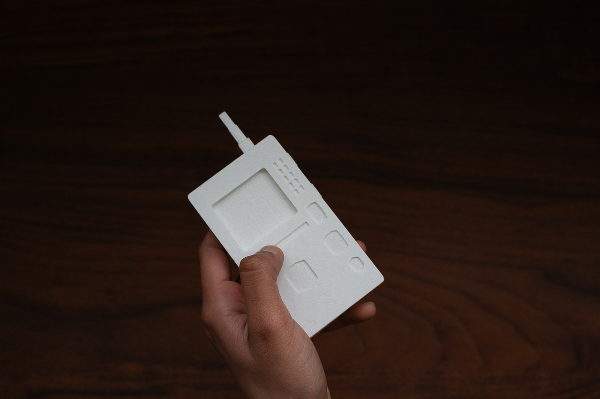
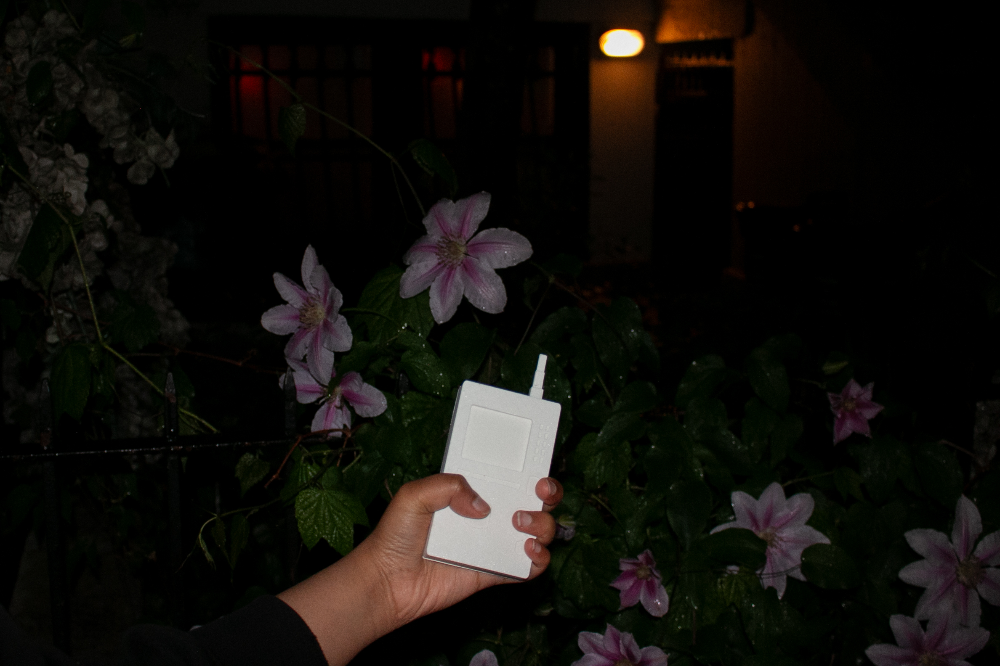
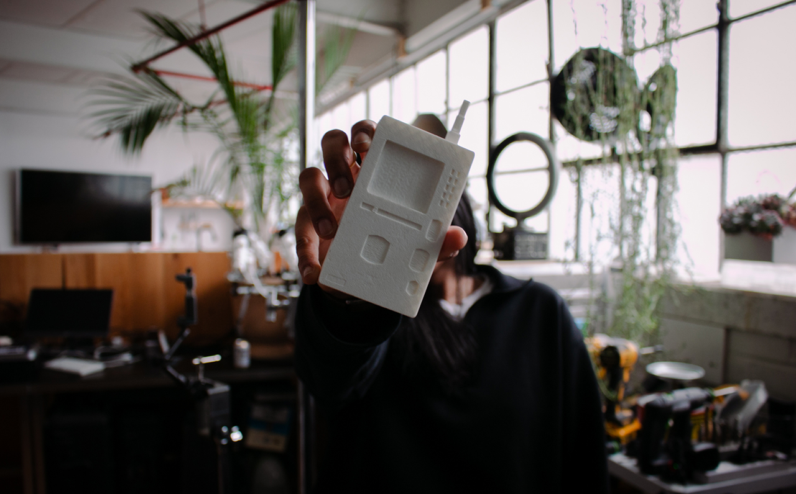
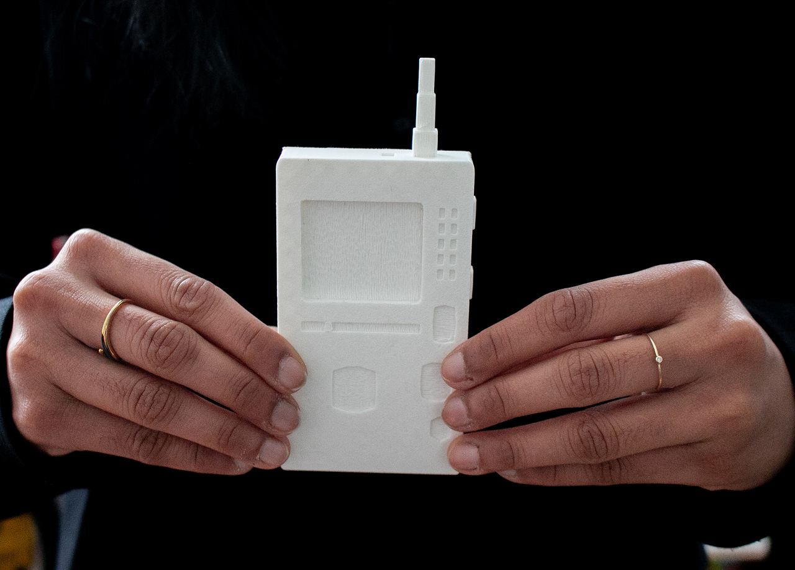
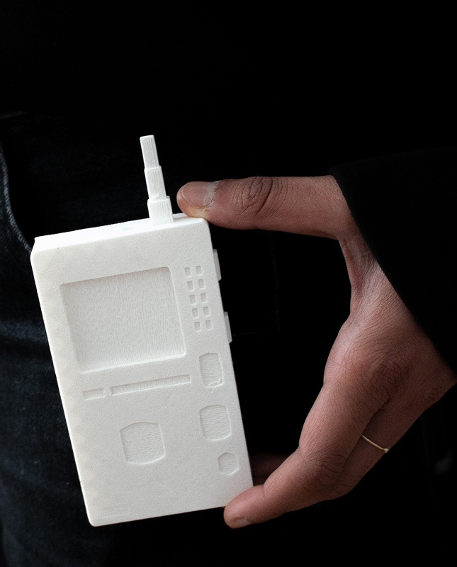
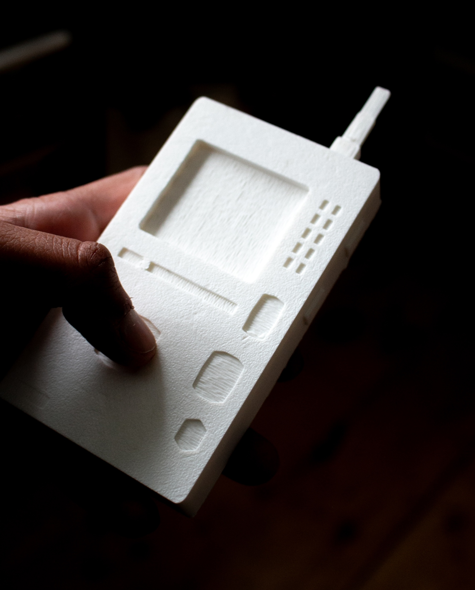
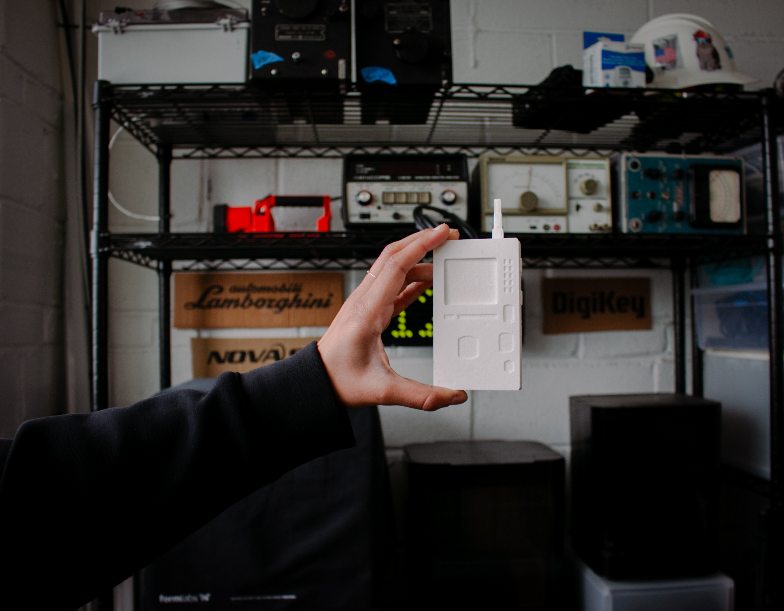

TOOLKIT: Figma, Blender 3D, 3D Printing, Adobe Premiere Pro
Limen is a tool for sensory cross-pollination and lateral thinking. It treats apophenia, our habit of finding meaning in coincidence and noise, as a design material: not a mistake to correct, but a muscle to exercise with care.

Many creative and technological tools keep people in closed, screen-bound loops. Limen instead functions as a spatial device. It uses where you are, what time it is, and the weather as lightweight context to generate multi-sensory prompts—bridges across color, sound, scent, texture, objects, movement, shadow, and the people nearby. The aim is not a single “correct” interpretation but richer noticing as you move through the world, parallels between things that do not obviously belong together.


The object is designed to be either buckled on or held in your hands as you navigate a space, offering signals and prompts throughout. It uses sound and haptic feedback to deliver prompts and capture observations. Additionally, you can toggle between various prompt categories.




The prompts read like small field exercises and the device further helps you record your field notes. Some prompt examples include seek something soft that appears hard and something hard that appears soft, then touch both surfaces. Alternatively, catch a fragment of a stranger’s voice and discern whether it feels like sandpaper, velvet, or glass. Then, find a material in the environment that matches the texture of their tone.
You can also find three things moving at different speeds (a cloud, a swaying branch, a person walking) to try and determine the ‘BPM’ (Beats Per Minute) of the park. Is the park playing a slow jazz song or a frantic techno beat? Together, these exercises turn ordinary places into a geography of quiet intersections—rhythms and textures that were always there, but easier to hear once the threshold moved.
Previous Project